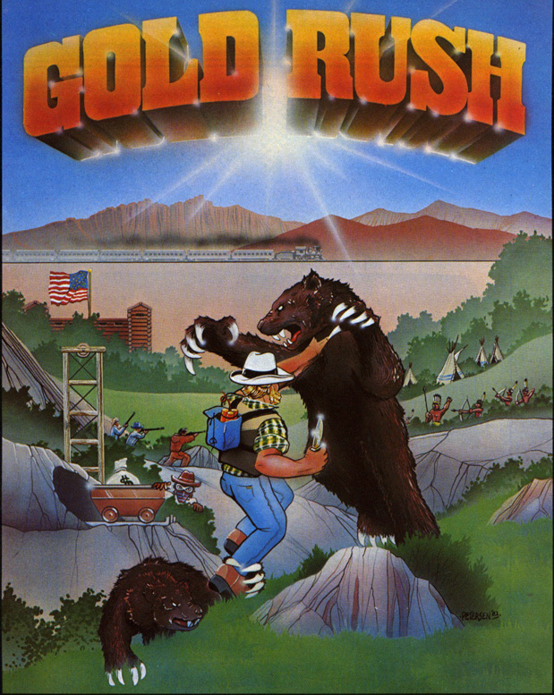

In Gold Rush, your mission is to find gold and bring it to mining cars while dodging soldiers, claim jumpers, and other enemies. Described in the July 1982 issue of Softline as a game that will keep you on the edge of your seat, Gold Rush puts you in another space and time where the “stakes are high” but worth it.

Impact
The 1982 version of Gold Rush is not to be confused with the 1988 game of the same name published by Sierra Offline – a more popular version.
Production History
Gold Rush was created by Michael Berlyn in 1982, who later worked for Infocom. He is an author of four novels. Gold Rush was published by Sentient Software.